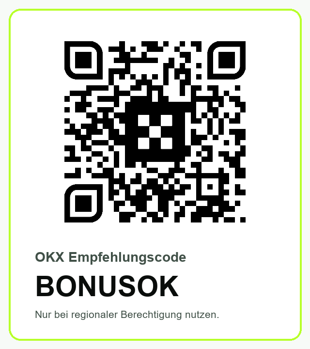

OKX Gebührenrechner: So messen EWR-Trader den echten Spot Break-even
Eine Order ist nicht schon deshalb profitabel, weil der Kurs die sichtbare Handelsgebühr übersteigt. Für den realistischen Break-even zählen beide Handelsseiten, der tatsächliche Maker-/Taker-Mix, Spread, Slippage und nur der wirklich ausgeführte Betrag. Dieser unabhängige Rechner macht diese Kosten vor dem ersten größeren Trade sichtbar.
All-in Spot Break-even berechnen
Alle Berechnungen laufen lokal im Browser. Es werden keine Eingaben übertragen. Prozentwerte sind frei editierbar.
Der geschätzte Gesamtkostenwert beträgt 6,70 €. Nicht ausgeführtes Volumen wird separat ausgewiesen und nicht künstlich als Kosten angesetzt.
Warum eine Gebührenliste den Break-even nicht beantwortet
Die Maker- und Taker-Sätze sind nur ein Teil der Rechnung. Eine Limitorder kann als Taker ausgeführt werden, wenn sie sofort gegen vorhandene Liquidität handelt. Eine Marketorder nimmt normalerweise Liquidität und kann mehrere Preisstufen durchlaufen. Dazu kommt der Spread zwischen bestem Kauf- und Verkaufskurs. In einem liquiden Markt kann er klein sein; bei volatilen oder dünnen Paaren kann er die sichtbare Gebühr übertreffen.
Slippage beschreibt die Differenz zwischen erwartetem und durchschnittlichem Ausführungspreis. Sie entsteht nicht nur bei großen Orders. Schnelle Kursbewegungen, geringe Markttiefe, Teilfüllungen und Latenz können auch kleine Trades verschieben. Der relevante Vergleich ist daher nicht „Gebühr gegen Gewinn“, sondern die gesamte Hin- und Rückreise der Position gegen die tatsächlich erzielte Kursbewegung.
Beispiel: Warum 0,5 Prozent Kursgewinn noch kein Gewinn sein müssen
Angenommen, ein EWR-Konto ohne eröffnetes X-Perps-Konto handelt 1.000 Euro. Bei einem Maker-Anteil von 50 Prozent mischt der Rechner den veröffentlichten Maker-Satz von 0,20 Prozent und den Taker-Satz von 0,35 Prozent. Für Ein- und Ausstieg ergeben sich in dieser vereinfachten Rechnung 5,50 Euro Gebühren. Ein gesamter Spread von 0,06 Prozent sowie je 0,03 Prozent Slippage beim Einstieg und Ausstieg ergänzen weitere 1,20 Euro. Die Position muss damit ungefähr 0,67 Prozent in die richtige Richtung laufen, bevor die modellierten Kosten ausgeglichen sind.
Das Beispiel ist absichtlich kein Renditeversprechen. Es zeigt nur, warum eine Strategie mit einem Ziel von 0,5 Prozent unter diesen Annahmen keinen positiven Erwartungswert aus der Kursbewegung allein ableiten kann. Ändern sich Liquidität, Ordertyp oder Kontogebühr, ändert sich auch die Schwelle. Genau dafür sind alle Felder offen.
Die EWR-Presets richtig verwenden
| Kontostatus laut OKX EWR-Tabelle | Maker | Taker | Wichtige Einordnung |
|---|---|---|---|
| Kein X-Perps-Konto eröffnet | 0,200% | 0,350% | Startwert; exakte Kontostufe prüfen |
| X-Perps-Konto eröffnet | 0,0800% | 0,1000% | Produktzugang und Angemessenheit separat prüfen |
Die Auswahl im Rechner ändert lediglich zwei Eingabefelder. Sie behauptet weder, dass X-Perps für Ihr Konto verfügbar oder geeignet ist, noch dass Sie ein solches Konto eröffnen sollten. Derivate bringen zusätzliche Risiken mit sich. Für eine reine Spot-Entscheidung ist es vernünftiger, die bereits geltenden Kontowerte zu übernehmen und die Strategie daran zu messen.
VIP-Stufen, 30-Tage-Handelsvolumen, EUR-Vermögen und spätere Gebührenänderungen können die Sätze verändern. Öffnen Sie deshalb vor einer relevanten Order die aktuelle Gebührenseite im Konto. Wenn der angezeigte Wert vom Preset abweicht, wählen Sie „Eigene Kontowerte“ und tragen Sie den aktuellen Satz ein.
Maker-Anteil nicht mit Limit-Anteil verwechseln
Eine Limitorder ist keine Garantie für Maker-Ausführung. Liegt ihr Preis so, dass sie sofort gegen eine bestehende Order handelt, nimmt sie Liquidität und kann als Taker abgerechnet werden. Für den Rechner zählt deshalb der beobachtete Maker-Anteil aus Ihren echten Fills, nicht die Absicht beim Absenden. Wer noch keine Historie hat, sollte mehrere Szenarien rechnen: null Prozent Maker als ungünstigen Fall, 50 Prozent als gemischtes Szenario und den später gemessenen Durchschnitt als realistischere Annahme.
Auch „Post only“ löst nicht jedes Problem. Die Order kann abgelehnt oder nicht gefüllt werden, während sich der Markt entfernt. Diese Opportunitätskosten lassen sich nicht seriös aus einer einzelnen Gebührenzahl ableiten. Dokumentieren Sie deshalb neben der Abrechnung auch verpasste Fills und nachträgliche aggressivere Orders.
Ein 15-Minuten-Ablauf vor dem ersten größeren Spot-Trade
Kontowerte ablesen
Notieren Sie Maker- und Taker-Gebühr aus dem eingeloggten Konto. Verlassen Sie sich nicht auf einen Screenshot oder eine alte Tabelle.
Marktbreite messen
Beobachten Sie Bid, Ask und Orderbuchtiefe zu der Uhrzeit, zu der Sie tatsächlich handeln möchten. Ein Durchschnittswert aus einer ruhigen Stunde ist kein Stresstest.
Kleine Testorder ausführen
Vergleichen Sie erwarteten Preis, durchschnittlichen Fill, ausgeführtes Volumen und abgerechnete Gebühr. Nutzen Sie nur Kapital, dessen Verlust tragbar ist.
Round trip simulieren
Rechnen Sie Ein- und Ausstieg. Eine Strategie mit 0,4% Zielbewegung kann nach 0,5% Gesamtreibung strukturell negativ sein.
Für einen zulässigen Kontotest können berechtigte Nutzer die OKX Spot-Handelsoberfläche mit dem dokumentierten Partnerparameter öffnen. Prüfen Sie dort vor jeder Order Paarverfügbarkeit, Gebühr, Orderbuch und Produktfreigabe. Der Link bestätigt keine regionale Berechtigung.
Teilfüllungen: weniger Volumen ist nicht automatisch weniger Risiko
Der Rechner wendet Gebühren und Reibung nur auf das ausgeführte Volumen an. Das ist absichtlich konservativ in der Buchhaltung: Ein nicht gefüllter Teil ist nicht als Handelsverlust realisiert. Trotzdem kann eine Teilfüllung das Strategierisiko erhöhen. Vielleicht wird nur der Einstieg, aber nicht der geplante Exit gefüllt. Vielleicht ist die Position kleiner als das Hedging-Modell erwartet. Vielleicht jagt eine Ersatzorder dem Kurs hinterher und erzeugt zusätzliche Slippage.
Behandeln Sie den angezeigten Break-even daher als Kostenindikator, nicht als vollständiges Risikomodell. Für API- oder Bot-Trading gehören Fill-Status, Restmenge, Cancel/Replace-Logik, Rate Limits und Notfallregeln in ein separates Ausführungsjournal.
Was der Rechner bewusst nicht versteckt
Der ausgeführte Orderwert wird sichtbar getrennt vom nicht gefüllten Teil ausgewiesen. Dadurch bleibt nachvollziehbar, auf welcher Basis Euro-Kosten und Prozentwert entstehen. Ein nur zu 40 Prozent gefüllter Auftrag hat in diesem Modell dieselbe prozentuale Reibung auf dem gefüllten Teil, aber einen kleineren absoluten Eurobetrag. In der Praxis kann die Restmenge später zu einem schlechteren Preis ausgeführt werden; dann gehört diese zweite Ausführung als eigener Fill in die Berechnung.
Bei sehr kleinen Orders können Rundung und Mindestgebühren stärker ins Gewicht fallen. Bei großen Orders wächst dagegen das Risiko, mehrere Preisstufen zu durchlaufen. Nutzen Sie den Rechner daher nicht als Begründung, das Volumen zu erhöhen. Ein sauberer Prozess vergleicht mindestens ein kleines Live-Ergebnis mit der Schätzung und passt Spread- sowie Slippage-Werte anschließend an.
Empfehlungscode BONUSOK: was transparent geprüft werden muss
Der Empfehlungscode BONUSOK führt über einen Affiliate-Link zur offiziellen OKX-Registrierung. Bei einer qualifizierten Registrierung können wir eine Vergütung erhalten. Das beeinflusst weder die hier verwendete Kostenformel noch ersetzt es den Vergleich mit anderen Handelsplätzen.
Im EWR sind Empfehlungsaufgaben und mögliche Prämien laut offizieller FAQ personalisiert und im jeweiligen Konto sichtbar. KYC, Compliance-Prüfung, App-Version, Region, Kontotyp und Fristen können entscheiden, ob eine Aufgabe erscheint oder zählt. Grenzüberschreitende Einladungen können ausgeschlossen sein. Deshalb nennt diese Seite keinen festen Bonusbetrag und verspricht keine Prämie.
Wenn Sie prüfen möchten, ob OKX in Ihrem Wohnsitzland und für den gewünschten Spot-Markt verfügbar ist, verwenden Sie Ihre echten Daten und lesen Sie die aktuellen Bedingungen. Umgehungsmethoden, Mehrfachkonten und künstliches Handelsvolumen widersprechen einem nachhaltigen und regelkonformen Test.
Kosten zuerst, Registrierung danach
Öffnen Sie den offiziellen OKX-Pfad nur, wenn Region, KYC und gewünschtes Produkt für Sie zulässig sind. Prüfen Sie anschließend im Konto die tatsächlichen Gebühren und das aktuelle Empfehlungsangebot.
Berechtigung bei OKX prüfenAffiliate-Offenlegung: Bei einer qualifizierten Registrierung über diesen Link können wir eine Vergütung erhalten. Es gibt keine garantierte Prämie, Gebührensenkung oder Rendite.

Risikohinweis für aktive Trader
Kryptoassets sind volatil und können vollständig an Wert verlieren. Der Rechner berücksichtigt keine Steuern, Finanzierungskosten außerhalb von Spot, Ein- und Auszahlungsgebühren, Netzwerkkosten, Wechselkurskosten, Ausfälle, Liquidationsrisiken von Derivaten oder Opportunitätskosten. Er ist keine Anlage-, Steuer- oder Rechtsberatung. Historische Liquidität garantiert keine künftige Ausführung.
Beginnen Sie mit einem kleinen Betrag, testen Sie Ein- und Auszahlung, aktivieren Sie starke Kontosicherheit, beschränken Sie API-Schlüssel und dokumentieren Sie jeden Fill. Wenn eine Strategie nur bei unrealistisch niedriger Slippage positiv wird, ist die richtige Reaktion nicht ein größerer Einsatz, sondern eine bessere Ausführung oder das Verwerfen der Idee.
Offizielle Quellen und Aktualität
- OKX: aktuelle Handelsgebühren für EWR-Nutzer (geprüft 16.07.2026)
- OKX: Trading fee rules FAQ zu Maker-/Taker-Ausführung
- OKX EEA Referral Program FAQ zu Berechtigung, Aufgaben und Missbrauch
- OKX EEA Terms of Service
Häufige Fragen
Ist der berechnete Break-even ein Kursziel?
Nein. Er ist eine Kostenschätzung unter den eingegebenen Annahmen. Er sagt nichts darüber aus, ob oder wann der Markt diese Bewegung erreicht.
Warum werden Ein- und Ausstieg gemeinsam berechnet?
Ein realisierter Spot-Trade benötigt normalerweise beide Seiten. Wer nur die Einstiegsgebühr betrachtet, unterschätzt die Kosten der Rückverwandlung oder des Exits.
Garantiert der Code BONUSOK eine Belohnung?
Nein. Das aktuelle Angebot ist konto-, regions- und kampagnenabhängig. Maßgeblich ist die Anzeige bei der Registrierung und im persönlichen Campaign Center.
Kann ich die EWR-Presets für andere Regionen nutzen?
Nur als frei veränderbare Rechenwerte. Die veröffentlichten Presets sind für EWR-Konten dokumentiert und dürfen nicht als Aussage über Gebühren oder Produktverfügbarkeit in anderen Regionen verstanden werden.